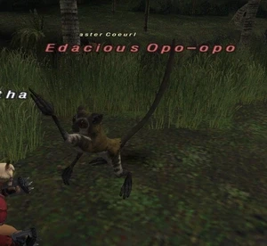

Level 75 reference · Zenith rules
|
Job: Notorious Monster |
 |

|
Zone |
Level |
Drops |
Steal |
Spawns |
Notes |
|
Yhoator Jungle (K-10) |
60 |
1 |
L, S, Sc | ||
|
HP = Detects Low HP; M = Detects Magic; Sc = Follows by Scent; T(S) = True-sight; T(H) = True-hearing JA = Detects job abilities; WS = Detects weaponskills; Z(D) = Asleep in Daytime; Z(N) = Asleep at Nighttime | |||||
Notes:
- Spawned by trading multiple Pamamas or Wild Pamamas, one at a time, to the ??? at K-10.
- After the NM is defeated, the ??? won't take more Pamamas for 15 minutes.
- It can take dozens of trades (Pamamas) to spawn the NM.
- MUCH higher chance of spawn when Wild Pamamas is traded, experience show max of 2 Wild Pamamas to spawn NM.
- Killable by: 2 characters level 65+ and can be soloed by most 75 jobs.
- Susceptible to Sleep, Bind & Gravity.
- Special Attacks: Spinning Claw - High-damage AoE.
Adapted from Eden Wiki: Edacious Opo-opo · Contributors and history · CC BY-SA 4.0. Revision 44674. Layout, links and optional background text adapted for Zenith.